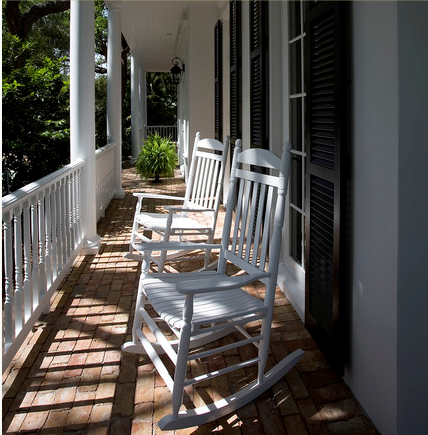
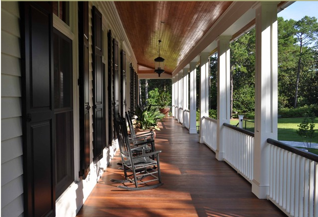

.png)
.PNG)
.PNG)
.PNG)
.PNG)
.PNG)
.JPG)
.JPG)
.PNG)
.PNG)


Welcome back for another day of Farmhouse Week (and the world’s longest post today!) I know those were some mighty bold rooms we looked at yesterday on Day 2. Today we are going more towards a classic style – much more subdued – so you can take off your shades now. 🙂 I prefer rooms not quite as patterned and cluttered with accessories as we saw in the work of Diamond & Baratta, and I thought it would be fun to look at what exactly it is that gives a home farmhouse style. Obviously there are a lot of interpretations! To narrow it down, I decided to think about, “What would I include if I were building a new farmhouse today?” So here’s my list (and I am starting with the obvious.)
1. Rocking chairs on the front porchhouzz.com
I found this photo of white rockers, but if my farmhouse is painted white, then I would prefer my porch chairs to be black for contrast. Wouldn’t you?

Now if I really want to freshen up my farmhouse styling I could go with this more modern rocker, (but I think I will stick with the classic one.)
2. Painted wood walls desiretoinspire.net
desiretoinspire.net
I know doing this is expensive, but this is what really gives a farmhouse its vintage look. I have learned that you do not have to do the entire room. You can do just one wall, and it will give it that look, but an entire room is absolutely beautiful.
3. Wood floors desiretoinspire.net
desiretoinspire.net
Again, I know this really runs up the cost, but it is another one of those “must haves” to achieve the farmhouse style.

Now let’s move to the kitchen where we can really go all out on the farmhouse style! Again I am going with the obvious one:
4. An apron front sink
You can have it skirted…
or not. adesignerandacontractor
adesignerandacontractor
5. Wood countertops houzz.com
houzz.com
I know marble seems to be what everyone chooses for kitchen counters these days, but a farmhouse is supposed to be somewhat simpler. I think marble would be too fancy for a farmhouse. So my choice is wood.
6. Mixed cabinetry
To really achieve the look that I would like in the kitchen, I would want to mix open shelves with regular wood door cabinets and also some glass front ones. Nothing like a little variety, right? 🙂
7. A plate rack countryliving.com
countryliving.com
Yes, I know. I already have a bunch of places to display dishes and things thanks to the glass front cabinets and the open shelving in the kitchen, but plate racks really give a kitchen an element of history. (Plus they allow me to display even more platters!)
Now let’s move to the dining room for our next one.
8. A farmhouse table housebeautiful.com
housebeautiful.com
I would love either one of these. In fact, a farmhouse table is something I have been wanting my husband to build for quite some time.
Now, let’s take a look at what would give our bedrooms an element of farmhouse style.
9. A four poster bed chambersarchitects.com
chambersarchitects.com
Both of these bedrooms have a farmhouse look thanks to the gorgeous beds in them. gardenandgun.com
gardenandgun.com
10. A metal bed lifestyle.ca.msn.com
lifestyle.ca.msn.com
I love all of the rooms in Sarah Richardson’s farmhouse. Several of the bedrooms have a brass bed in them.
Next up is the bathroom. There are several easy ways to add farmhouse style to these rooms.
11. A clawfoot bathtub elisalou.com
elisalou.com
The clawfoot tubs in all of these look so relaxing, and the wooden door is also another good piece of history added to the bathroom above.
12. A sink with legs marthastewart.com
marthastewart.com
I like the basket used for storage under the sink above. pinterest
pinterest
13. Vintage style lighting
This home in South Carolina has got to be my favorite house anywhere. It is amazing how much the lighting makes you think you are in an authentically older home – when in reality it is actually a new home.
Our last 2 elements are just for fun. They are smaller things that are easy to use for adding a touch of farmhouse style to any room.
14. Something out of galvanized metal
How about a galvanized metal sink…. atticmag.com
atticmag.com
or a tub for out in the yard…. thesproutedroot.com
thesproutedroot.com
or even some large bucket lights? Don’t they look like they came straight from the farm? 🙂
and our final one…ta da….
15. Mason jars
They can be used in any number of ways for a touch of farmhouse styling:
candle holders…. stylemepretty.com
stylemepretty.com
lighting… cookieandkate.com
cookieandkate.com
and for holding fresh from the garden flowers. sweetcarolinalife
sweetcarolinalife
I hope you have enjoyed looking at some of the ways to add elements to your home to give it a farmhouse feel.
Do you have any of these in your current home now?
I’d love to hear about them in your comments! Remember, if you leave a comment, you’ll be entered in the drawing for the Calloway Gardens delicious treats I told you about in the Farmhouse Week day 1 post.
Hope to hear from you soon!

*****giveaway is now closed*****


.PNG)
I would like to change my counter tops I have oak cabinets, we built our home 20 years ago. The counter tops are now Formica, I’m not crazy about granite, I liked your idea of wood, but how would I do that with my stained oak cabinets, would I need to paint the cabinets?
thank you for you time,
kerri
———————————————————————–
That would be a good bit of wood to have both the countertops and the cabinets themselves stained. I would probably recommend painting the cabinets like you said Kerri. (And I have never painted oak, so I do not know the best procedure for that.)
Kelly
[…] photo via www.talkofthehouse.com […]
[…] instead of hiding them in cupboards. I love the distressed look of the farmhouse beams. I like the design in the wood floor of this picture and the mixed cabinetry also makes it a Farmhous… I like the subtle colors of the red, white and blue in this kitchen. I like the simple white […]
My daughter is buying a modern farmhouse style house on two acreas of land. The whole inside needs to be painted. What colors would be good for a farmstyle house. The wrap around front porch prevents as much light coming in as she would light so I know they need to use light colors.
———————————————————————-
How wonderful for your daughter! Unlike other people who give decorating advice, I believe color is a very personal choice, and it also varies in a room by the amount of light that enters that room. So when people tell you that they have found the perfect gray or the perfect white or the perfect neutral, I have a difficult time believing them. BUT I will say that in our very first home that we painted as newlyweds, we used a very light cream on all the walls – much like Benjamin Moore’s Linen White, and all of our trim was a pure white – like Benjamin Moore’s Bright White (I think that is what it is called.) I really liked the lightness of the rooms in that house. I like my creams to have a yellow undertone, not a blue, because yellow warms up the space. I like neutral walls because it allows me the flexibility of changing out accessories in a room for a different color scheme without breaking the bank. Our second home had all yellow walls, and that really limited my choice in decorating. 🙁 Your daughter should be sure to get some little sample pots, try them out on different walls in big swatches, and see how she likes it. When we were trying to decide on our exterior, I used 15 different samples before we decided!
Good luck with all the decorating choices!
Kelly
I loved all the photos. You included a photo of our farmhouse kitchen (mixed cabinetry), our bathroom and our bedroom. We are honored to be included!
————————————————————-
Your house is gorgeous!! And it is not just me that thinks that. Many many of my readers have enjoyed seeing it, as well. You are so very talented.
Have a great week!
Kelly
Well, I have everything but a sink with legs and a clawfoot tub! And my skirted kitchen sink just has an old piece of wood trim that makes it *look* like an apron front sink. We are about to change the countertops and as much as I want marble, it is not in the budget so we will be making wood counters out of reclaimed chestnut, so thanks for helping me firm up that decision, lol. Love this post and so happy I found your blog:-)
——————————————————————————
Anita, it sounds like you have a great kitchen! Love the idea of the look-alike apron front sink. I am happy you found the blog too! Please visit again!
Kelly
We’ve got a few of the elements that you mentioned…
wood floors, mason jars, galvanized elements, and a barn table.
great series….
Fun, fun, fun! I just spent the last 15 minutes oogling over your TWO posts! The color one had lots of color! (duh) I did enjoy it, though, gleaning bits and pieces out of each picture:-)
This farmhouse post is most enjoyable, I loved the red floor in the South Carolina room, and they had a braided rug! very farm housy! Well, here’s what we have: My dad made our dining table, check on the mason jars, our house HAD a claw tube but the previous owners removed it and opted for something more “modern.” We have the wood floors but I don’t have the apron front sinks! And I so love them! Actually, I’m just relieved that the previous owners didn’t get their way and were talked out of, by a contractor, putting an avocado green sink in the kitchen! horrors! Of course that same green sink was put in the laundry room!
I love the simplicity and authenticity of a farmhouse style. As long as it isn’t too frilly then you can count me in – I guess what I really love is modern farmhouse style. You did a great analysis of what constitutes a farmhouse style.
Hi Kelly,
First, thank-you for taking the time to respond to all of the comments. It makes it feel so personal. The way the blog is going, won’t be long before you’ll have to give that up!!!
I don’t know what I like best, the galvanized sink, the dark wood floors, the wood on the floors, or just the feeling of wanting to sit in each of the rooms. Great selection of photos.
Thanks for sharing.
Jean
Kelly,
What a great post, clearly this took some work. I really enjoyed the kitchen chapter most, your selection of images struck a chord with me. I agree, the right mixture of cupboards, both solid front and glass along with some open shelving is so attractive. I love the plate rack. The mason jars have always charmed, and I especially like using them for vases, especially for outdoor dining.
There must be a bit of a farm girl in me since I gravitate towards so much of what you’ve shown us. 🙂
Karen
Kelly, these are GORGEOUS. What an amazing roundup of beautiful farmhouse photos. As for me, I have some galvanized metal, wood floors, vintage-style lighting…no wood walls, but I have planked ceilings similar to your first photo under #3, do they count? Great post. 🙂
Thank you, thank you, thank you sweet Kelly! Not long enough! I could have kept scrolling for much longer with all of those delicious photos that you found.
In our little old (101 years old) house we do have some of the elements that you have highlighted… wood floors being one of my favourites. Of course many of the wood floors have to be excavated first. Luckily the main floor was already done when we moved in – our whole upstairs is like an archeology dig! We have only uncovered the hallway and one small cupboard floor – ripping up various layers of carpet, tile and sheet linoleum before exposing the beautiful wide board wooden floors. Very fun but hugely time consuming… One thing I’m worried about is that we will lose our sound proofing once all of that stuff comes off!
I also love the apron front sink and regret not putting one in when we renovated our kitchen. Oh well… next time I guess!
Well I better stop now or this will be the longest reply in history! 🙂
As always, love your posts
Cath
Kelly, as I said I am just LOVING this series! I love farmhouse style with a litttle spin and am getting some great ideas from you! White wood walls and butcher block countertops are majorly on my radar for when we’re able to do that! I can’t wait to infuse some farmhouse style!
It was the world’s longest post. But it needed to be! I like “#14 Something out of galvanized metal.” So true, always present in the farmhouse style.
I’ve always wanted an apron front sink, and I would love to put that galvanized tub light fixture in my son’s room. Really cool!
Excuse me while I wipe the drool off my keyboard! Those are amazing pictures Kelly….I feel like I could step into any of those homes featured and feel right at home.
I know you’ve put a lot of time into researching farmhouses so I wanted to thank you for sharing them with us.
Have a wonderful day!
I love all of it. My favorites are the open shelving in the kitchens, and the dining table centered in the middle of the kitchen, instead of an island.
Don’t all those beautiful farmhouse rooms give you a warm feeling! One thing missing though was cast iron cookwear in the kitchens which makes me think of farm houses. Or were those hall lights in the 6th picture turned up side down iron skillets. 🙂 Just teasing. Loved the outdoor shower with the enamel tub; makes me think of my grandma’s house of many years ago. Thanks for posting all of these pictures. I enjoy your “on line” magazine so much.
Well I have wood flooring and mason jars! I’ve got a ways to go!!! 🙂
I love farmhouse style! We have a plank ceiling in our stairwell, beadboard soffits in the kitchen and intend to add more of these elements. Thanks for the fun exploration of this style on your blog this week!
Hmmm… We don’t have many of the elements you mentioned. We do have a big wooden table that I love, but it’s not really a traditional farmhouse table. I love quilts, so we have a beautiful quilt square hanging in our bedroom, and quilts on every bed.